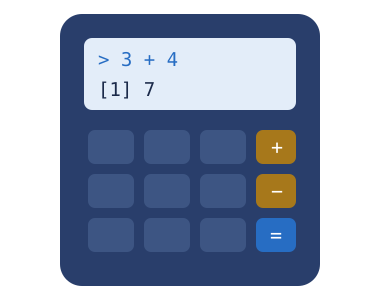

[1] 7Tema 01 · Apertura
Primeros pasos en R
R como calculadora y tus primeros vectores
Introducción a R · Maestría en Ciencias Médicas, UNAM · 2027-1
Dra. Yalbi Itzel Balderas-Martínez
LABBIC — INER

Antes de entrar al curso propiamente, tres cosas:
Después seguimos con la consola, la ayuda, los paquetes y las variables.
Escríbelo en la consola y presiona Entrar. R responde.
El [1] del inicio no es parte del resultado: indica que la respuesta empieza en el elemento uno.

%% devuelve el sobrante de la división. Cinco entre tres da uno, y sobran dos.
Sirve, por ejemplo, para saber si un número es par: n %% 2 vale cero cuando lo es.
Piensa un número cualquiera. No me lo digas.
Haz esto en la consola, uno por uno:
Acabas de usar R para verificar algo que ninguna calculadora te habría dejado comprobar tan rápido: que el resultado no depende del número que pensaste.
Esa flecha, <-, guarda un valor con un nombre. Hoy la usamos sin más; se explica a fondo más adelante.
La función c() combina varios valores en un vector: una secuencia de valores del mismo tipo.
length() dice cuántos elementos tiene. mean() da el promedio.
En la consola:
pulsos con estos seis valores: 72, 68, 80, 75, 90, 79%%<-c()length(), mean(), sum(), min(), max()Y la idea que sostiene el curso: R no da el resultado, deja escrito el procedimiento.
Y con eso, entramos al tema.
Introducción a R · Maestría en Ciencias Médicas, UNAM · LABBIC-INER · 2027-1